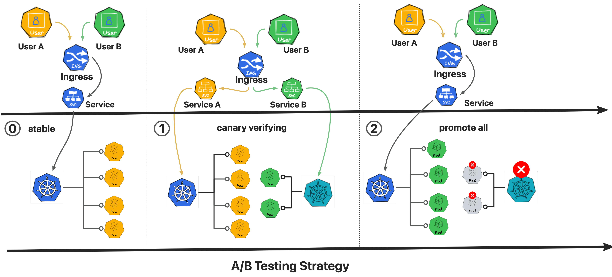

20230309_KuriseRollout灰度发布
一、架构设计：
Kruise rollout 是一个Bypass的旁路组件， 其主要功能是为标准的Kubernetes Deployment、Statefuset以及 openKurise Cloneset这类工作负载进行提供高级部署功能而存在的，其中提供的高级部署功能包含： 金丝雀灰度、流量路由和渐进式交付。
其中关于原生的Kubernetes对象Deployment 目前实现的是通过流式的滚动进行发布的，因而对于单Deployment 对象无法设置卡点，或者执行分批的发布，（当然CLonset这种OpenkruiseCRD对象通过完全托管的方式来进行发布是可以支持的。）为解决该问题，每次发布时都会创建新的 Deployment，并且对 Deployment 扩容的同时，缩容旧的 Deployment，相当于每次发布完成后 Deployment 都会被替换。
使用Kurise-rollout用户无需做任何 Pod 或 Workload 的迁移工作，对存量运行时容器无影响，不影响扩缩容链路，故接入相对十分简便。
在CNCF的生态环境下，对标kruiseRollout 的 其他 开源项目 对Kruise Rollout 的横向对比如下。
目前Kruise Rollout 作为 阿里开源的Openkruise 子项目存在，如果处于ACK云上 kubernetes 环境，当通过 “运维管理”-> “组件管理” -> “应用管理” 可以找到，并添加ack-kruise 后，则会自动安装 openkruise 与kruise rollout 的 所有组件。
kruise-Rollout 对于现有发布的管理逻辑实现如下图：
注：本次的试验与验证环境均基于 开源的项目 kruise-rollout 来进行实现。
二、 部署Kruise Rollout 组件
独立集群，或者私有集群，通过helm形式安装：
1# 添加更新repo源
2# helm repo add openkruise https://openkruise.github.io/charts/
3# helm repo update
在openkruise 的项目当中默认包含了4个组件，kruise-rollout 是作为其中的一个组件存在。
kruise-rollout 的安装配置readme
1# Kruise Rollout v0.3.0
2
3## Configuration
4
5The following table lists the configurable parameters of the kruise chart and their default values.
6
7| Parameter | Description | Default |
8|----------------------------------|-------------------------------------------------------------------|-------------------------------------|
9| `installation.namespace` | Namespace for kruise-rollout operation installation | `kruise-rollout` |
10| `installation.createNamespace` | Whether to create the installation.namespace | `true` |
11| `rollout.fullname` | Nick name for kruise-rollout deployment and other configurations | `kruise-rollout-controller-manager` |
12| `rollout.featureGates` | Feature gates for kruise-rollout, empty string means all disabled | `AdvancedDeployment=true` |
13| `rollout.healthBindPort` | Port for checking health of kruise-rollout container | `8081` |
14| `rollout.metricsBindAddr` | Port of metrics served by kruise-rollout container | `127.0.0.1:8080` |
15| `rollout.log.level` | Log level that kruise-rollout printed | `4` |
16| `rollout.webhook.port` | Port of webhook served by kruise-rollout container | `9876` |
17| `rollout.webhook.objectSelector` | ObjectSelector for workloads in MutatingWebhookConfigurations | ` ` |
18| `image.repository` | Repository for kruise-rollout image | `openkruise/kruise-rollout` |
19| `image.tag` | Tag for kruise-rollout image | `v0.3.0` |
20| `image.pullPolicy` | ImagePullPolicy for kruise-rollout container | `Always` |
21| `imagePullSecrets` | The list of image pull secrets for kruise-rollout image | ` ` |
22| `resources.limits.cpu` | CPU resource limit of kruise-rollout container | `500m` |
23| `resources.limits.memory` | Memory resource limit of kruise-rollout container | `1Gi` |
24| `resources.requests.cpu` | CPU resource request of kruise-rollout container | `100m` |
25| `resources.requests.memory` | Memory resource request of kruise-rollout container | `256Mi` |
26| `replicaCount` | Replicas of kruise-rollout deployment | `2` |
27| `service.port` | Port of webhook served by kruise-rollout webhook service | `443` |
28| `serviceAccount.annotations` | The annotations for serviceAccount of kruise-rollout | ` ` |
29
30Specify each parameter using the `--set key=value[,key=value]` argument to `helm install`. For example,
31
32### Optional: feature-gate
33
34Feature-gate controls some influential features in Kruise:
35
36| Name | Description | Default | Effect (if closed) |
37|-----------------------|--------------------------------------------------------------------------------------------------------|----------|-----------------------------------------|
38| `AdvancedDeployment` | Whether to enable the ability to rolling update deployment in batches without extra canary deployment | `true` | advanced deployment controller disabled |
39
40### Optional: the local image for China
41
42If you are in China and have problem to pull image from official DockerHub, you can use the registry hosted on Alibaba Cloud:
43
44```bash
45$ helm install kruise https://... --set image.repository=openkruise-registry.cn-shanghai.cr.aliyuncs.com/openkruise/kruise-rollout
46...
47```
安装kruise-rullout ： 使用helm安装
1# helm install kruise-rollout openkruise/kruise-rollout --version 0.3.0 --set installation.namespace="kruise-system" --set installation.createNamespace="false" --set rollout.featureGates="AdvancedDeployment=true" -n kruise-system
注意： 这里由于默认情况下 kruise-rollout 会安装在 kruise-rollout 命名空间，而该命名空间不存在，因而 会installation.createNamespace="true" ，但是我这里为了和 阿里云上的ack-kruise 保持一致所以放在了已经存在的kruise-system命名空间当中，因而需要将--set installation.createNamespace="false" ,否则会报错 annotation validation error: key “meta.helm.sh/release-name” ：
三、使用kruise-rollout
3.1 基础使用逻辑：
3.2 基础使用逻辑清单模板：
1kubectl apply -f 01-app-manifest.yaml
1apiVersion: apps/v1
2kind: Deployment
3metadata:
4 name: echoserver
5 labels:
6 app: echoserver
7 namespace: foo
8spec:
9 replicas: 5
10 selector:
11 matchLabels:
12 app: echoserver
13 strategy:
14 rollingUpdate:
15 maxSurge: 20%
16 maxUnavailable: 0
17 type: RollingUpdate
18 template:
19 metadata:
20 labels:
21 app: echoserver
22 spec:
23 containers:
24 - name: echoserver
25 # mac m1 should choics image can support arm64,such as image e2eteam/echoserver:2.2-linux-arm64
26 image: cilium/echoserver:1.10.1
27 #image: cilium/echoserver:1.10.3
28 imagePullPolicy: IfNotPresent
29 ports:
30 - containerPort: 8080
31 env:
32 - name: PORT
33 value: '8080'
34---
35apiVersion: v1
36kind: Service
37metadata:
38 name: echoserver
39 labels:
40 app: echoserver
41 namespace: foo
42spec:
43 ports:
44 - port: 80
45 targetPort: 8080
46 protocol: TCP
47 name: http
48 selector:
49 app: echoserver
50---
51apiVersion: networking.k8s.io/v1
52kind: Ingress
53metadata:
54 name: echoserver
55 # 这里的annotation 需要附加，是为给kruise-rollout 进行查看的,未来ingress.class 会被弃用，转而使用ingressClassName的方式进行指定IngressController
56 #annotations:
57 # kubernetes.io/ingress.class: nginx
58 namespace: foo
59spec:
60 ingressClassName: nginx
61 rules:
62 - host: echoserver.nginx-example.com
63 http:
64 paths:
65 - backend:
66 service:
67 name: echoserver
68 port:
69 number: 80
70 path: /apis/echo
71 pathType: Exact
72# 验证服务状态：
73# curl http://echoserver.nginx-example.com/apis/echo
1 curl http://echoserver.nginx-example.com/apis/echo
3.3 部署KruiseRollout的CRD基础策略
说明:
关于rolling-style
1apiVersion: rollouts.kruise.io/v1alpha1
2kind: Rollout
3metadata:
4name: rollouts-demo
5namespace: default
6annotations:
7 rollouts.kruise.io/rolling-style: partition
可选择的选项有canary与partition。
差别如下：
canary，该模式是默认参数，在该选项的模式下面，会创建一个一个全新的如： example-deployment-canary 为名称的deployment 出来。该deployment属于中间状态的deployment，此外如果有service 或者ingress 对象，也会创建 example-service-canary 以及 example-ingress-canary 的中间对象，在完成rolling 之后则会将中间状态的所有对象全部删除。
示例：
1apiVersion: rollouts.kruise.io/v1alpha1
2kind: Rollout
3metadata:
4name: rollouts-demo
5annotations:
6 rollouts.kruise.io/rolling-style: canary
7spec:
8objectRef:
9 workloadRef:
10 apiVersion: apps/v1
11 kind: Deployment
12 name: workload-demo
13strategy:
14 canary:
15 steps:
16 - weight: 20
17 trafficRoutings:
18 - service: service-demo
19 ingress:
20 classType: nginx
21 name: ingress-demo
partition - multiBatch， 在该模式下面，会针对于原本的Deployment 进行修改，本质上修改的是Rs的数量。不会产生中间状态的Deployment service或者 ingress
示例：
1apiVersion: rollouts.kruise.io/v1alpha1
2kind: Rollout
3metadata:
4 name: rollouts-demo
5 annotations:
6 rollouts.kruise.io/rolling-style: partition
7spec:
8 objectRef: # 绑定你的 Deployment
9 workloadRef:
10 apiVersion: apps/v1
11 kind: Deployment
12 name: workload-demo # 制定你的分批发布规则
13 strategy:
14 canary:
15 steps:
16 - replicas: 1 #第一批发一个 Pod，发布完后暂停，手动确认后进入下一批
17 - replicas: 60% #第二批发60% Pod，发布完后暂停，手动确认后进入下一批
18 - replicas: 100% #第三批发全量 Pod，最后一批发布完后默认自动完成
Partition A/B
 示例：
1apiVersion: rollouts.kruise.io/v1alpha1
2kind: Rollout
3metadata:
4 name: rollouts-demo
5 annotations:
6 rollouts.kruise.io/rolling-style: partition
7spec:
8 objectRef:
9 workloadRef:
10 apiVersion: apps/v1
11 kind: Deployment
12 name: workload-demo
13 strategy:
14 canary:
15 steps:
16 - replicas: 1
17 matches:
18 - headers:
19 - name: user-agent
20 type: Exact
21 value: pc
22 - replicas: 50%
23 - replicas: 100%
24 trafficRoutings:
25 - service: service-demo
26 ingress:
27 classType: nginx
28 name: ingress-demo
1apiVersion: rollouts.kruise.io/v1alpha1
2kind: Rollout
3metadata:
4 name: rollouts-demo
5 # The rollout resource needs to be in the same namespace as the corresponding workload(deployment, cloneSet)
6 # namespace: xxxx
7spec:
8 objectRef:
9 # rollout of published workloads, currently only supports Deployment, CloneSet
10 workloadRef:
11 apiVersion: apps/v1
12 kind: Deployment
13 name: echoserver
14 strategy:
15 canary:
16 # canary published, e.g. 20%, 40%, 60% ...
17 steps:
18 # routing 5% traffics to the new version
19 - weight: 5
20 # Manual confirmation of the release of the remaining pods
21 pause: {}
22 # optional, The first step of released replicas. If not set, the default is to use 'weight', as shown above is 5%.
23 replicas: 20%
24 trafficRoutings:
25 # echoserver service name
26 - service: echoserver
27 # echoserver ingress name, current only nginx ingress
28 ingress:
29 name: echoserver
**需要注意的是：**Kruise Rollout是一个常态化的配置，只需要下发到集群中即可。后面业务版本发布只需要调整Deployment配置，不需要再对Kruise Rollout进行操作
1kubectl apply -f rollout.yaml
2kubectl get rollout
3.3 升级Deployment ，本例将1.10.2 升级到1.10.3
1apiVersion: apps/v1
2kind: Deployment
3metadata:
4 name: echoserver
5...
6spec:
7 ...
8 containers:
9 - name: echoserver
10 image: cilium/echoserver:1.10.3
11 imagePullPolicy: IfNotPresent
3.4 观察Deployment的变化。
此时可以看到被选中的20% 副本，这里为 5*20%= 1 个副本变成了新版本
1kubectl apply -f deployment.yaml
2kubectl get deployment echoserver echoserver-sgg
3
4kubectl get deployment echoserver-sgg -o yaml |grep -i A 3 image
5
6kubectl get ingress
7kubectl get ingress echoserver-canary -o yaml |grep -A 1 -B 2 weight
8kubectl get service
中间过程会产生一个新的rs
3.5 approve 继续更新（在业务方确认实例发布成功后）
1） 单工作负载方式
1kubectl get rollout
2kubectl-kruise rollout approve rollout/rollouts-demo -n default
3kubectl get rollout
4kubectl get deploument
5kubectl get ingress
6kubectl get service | grep echoserver
- 审批通过进行扩容
kubectl get rollout ，该rollingout 包含3个step 。
3.5 回滚
回滚分为2种，一种是针对当前发布的版本进行 失败的回滚。该方式直接进行修改Deployment当中的image 成之前的即可，
另外一种是针对当前发布的Deployment 进行 回滚到 若干个版本之前的回滚，而此模式会涉及到kruise-rollout的approve动作，实际生产环境场景下不太适用，所以kruise-rollout无法完成该动作 ，变通的方式是执行修改Deployment 的image 之后，删除rollout 的crd对象。借助kubernetes 自身能力来完成。完成后再执行apply rollout 的CR对象操作。
针对于第一种发布的回滚 ，操作如下：
- 将发布配置成为如下的发布失败的清单：
1apiVersion: apps/v1
2kind: Deployment
3metadata:
4 name: echoserver
5...
6spec:
7 ...
8 containers:
9 - name: echoserver
10 # 此处的镜像是找不到的 ，肯定会失败。
11 image: cilium/echoserver:failed
12 imagePullPolicy: IfNotPresent
- 在此状态下rollout的状态可能依然是**
StepUpgrade** 的这样的状态，但是实际上该deployment 是一个**ImagePullBackOff**的状态。
1kubectl get rollout
2kubectl get deployment
3kuebctl get pods | grep echoserver-snc
- 将发布失败的资源清单回滚至最早的版本.
1apiVersion: apps/v1
2kind: Deployment
3metadata:
4 name: echoserver
5...
6spec:
7 ...
8 containers:
9 - name: echoserver
10 # m1 should rollback to e2eteam/echoserver:2.2-linux-arm64
11 image: cilium/echoserver:1.10.2
12 imagePullPolicy: IfNotPresent
注意：修改为之前的image 是回滚操作不用approve 动作。
- 当应用该正常的1.10.2版本后，
rollout的对象的STATUS状态则变成Health的字样，但是CANARY_STATS是**StepUpgrade**的状态。
1kubectl get rollout
- 开发人员在经过测试后将1.10.3 版本继续发布,
更新deployment ，当完成后，Rollout的状态则变成health，且CANARY_STATS是**Completed**的状态。
四、高级Kruise-rollout 分批发布清单
4.1 分1个pod、60% 、100% 的pod方式进行发布，于此同时并切流量为5% 60% 与100% 在nginx ingress class上。 （注： kruise-rollout v0.3.0 版本）
1apiVersion: rollouts.kruise.io/v1alpha1
2kind: Rollout
3metadata:
4 name: rollout-with-traffic
5 # The rollout resource needs to be in the same namespace as the corresponding workload(deployment, cloneSet)
6 namespace: foo
7 annotations:
8 rollouts.kruise.io/rolling-style: partition
9spec:
10 objectRef:
11 # rollout of published workloads, currently only supports Deployment, CloneSet
12 workloadRef:
13 apiVersion: apps/v1
14 kind: Deployment
15 name: echoserver
16 strategy:
17 canary:
18 # canary published, e.g. 20%, 40%, 60% ...
19 steps:
20 #- replicas: 1 #第一批发一个 Pod，发布完后暂停，手动确认后进入下一批
21 #- replicas: 60% #第二批发60% Pod，发布完后暂停，手动确认后进入下一批
22 #- replicas: 100% #第三批发全量 Pod，最后一批发布完后默认自动完成
23 # optional, The first step of released replicas. If not set, the default is to use 'weight', as shown above is 5%.
24 - replicas: 1
25 # routing 5% traffics to the new version
26 weight: 5
27 # Manual confirmation of the release of the remaining pods
28 pause: {}
29 - replicas: 60%
30 weight: 30
31 pause: {}
32 matches:
33 - headers:
34 - key: user-agent
35 type: Exact
36 value: pc
37 - replicas: 100%
38 weight: 60
39 pause: {}
40 - replicas: 100%
41 weight: 100
42 #pause: {}
43 trafficRoutings:
44 # echoserver service name
45 - service: echoserver
46 # echoserver ingress name, current is nginx ingressclass
47 ingress:
48 name: echoserver
49 classType: nginx # 也可以aliyun-alb , 名称与kruise-rollout-controller-manager 容器目录下 /lua_configuration/trafficrouting_ingress 文件名去掉.lua后缀对应。
- 修改镜像，由v1.10.1 改为v1.10.2 触发rollout 动作。同时会创建 canary的service 与 ingress 。
-
approve 该操作，继续引入流量，并添加副本，流量在ingress 已经canary 至30
1 kubectl-kruise rollout approve rollout rollout-with-traffic -n foo
- 继续approve 到最后
五、Kruise-tools 工具
5.1 安装与说明
Kruise-tools 是一个openkruise的命令行插件，提供类似 kubectl-kruise这类插件
1# 下载地址：
2# https://github.com/openkruise/kruise-tools/releases
3
4wget https://github.com/openkruise/kruise-tools/releases/download/v1.0.5/kubectl-kruise-linux-amd64.tar.gz
5tar xvf kubectl-kruise-linux-amd64.tar.gz
6cp linux-amd64/kubectl-kruise /usr/local/bin/
7# 命令补全，默认会补全描述信息，不方便会有多余的字符出来，这里禁用掉。
8kubectl-kruise completion bash --no-descriptions=true > /etc/bash_completion.d/kubectl-kruise
5.2 工具使用
- 暴露端口
1# kubectl kruise expose cloneset nginx --port=80 --target-port=8000
- 弹性工作负载
1# kubectl kruise scale --replicas=3 cloneset nginx
2
3# 等同于kubectl scale --replicas=3 cloneset nginx.
- 重启、恢复、审批，回滚
1# kubectl kruise rollout undo cloneset/nginx
2
3# Statefulset对象
4# kubectl kruise rollout status statefulsets/sts1
5
6# kruise statefulsets
7# kubectl kruise rollout status statefulsets.apps.kruise.io/sts2
8
9# approve a kruise rollout resource named "rollout-demo" in "ns-demo" namespace
10# kubectl-kruise rollout approve rollout-demo -n ns-demo
- 配置负载
可以配置的字段包含：env,image,resources,selector,serviceaccount,subject
1# kubectl kruise set env cloneset/nginx STORAGE_DIR=/local
2# kubectl kruise set image cloneset/nginx busybox=busybox nginx=nginx:1.9.1
- 迁移工作负载对象，当前只可以从Deployment 迁移到openKruise的CloneSet上
1# Create an empty CloneSet from an existing Deployment.
2# kubectl kruise migrate CloneSet --from Deployment -n default --dst-name deployment-name --create
3
4# Create a same replicas CloneSet from an existing Deployment.
5# kubectl kruise migrate CloneSet --from Deployment -n default --dst-name deployment-name --create --copy
6
7# Migrate replicas from an existing Deployment to an existing CloneSet.
8# kubectl-kruise migrate CloneSet --from Deployment -n default --src-name cloneset-name --dst-name deployment-name --replicas 10 --max-surge=2
- 指定缩容,只可以对Clonest进行使用
1# 缩容nginx clonset的 pod-a pod-b 这两个pod
2# kubectl kruise scaledown cloneset/nginx --pods pod-a,pod-b
六、关于Ingress lua的扩展 ingress annotation
6.1 nginx ingress controller 的canary相关参数
Nginx ingress 默认的支持的canary 相关参数：
1# 是否进行开启灰度 "true" | "false"
2"nginx.ingress.kubernetes.io/canary: true"
3
4# 灰度权重值，可简单理解为百分比。
5"nginx.ingress.kubernetes.io/canary-weight: 30"
6
7# canary的过程优先级顺序如下：canary-by-header > canary-by-cookie > canary-weight , 因此当有以下配置时，canary-weight的配置则不起作用。
8# 通过是被client过来头部当中的加带 -H "canary: never"，来判断灰度条件，当设置为"never" 或者 "always" 则表示"不会"，或者"一直" ，进行灰度。
9"nginx.ingress.kubernetes.io/canary-by-header: canary"
10
11# 当满足 -H "canary: user-value" 的请求，则会灰度到canary版本。
12"nginx.ingress.kubernetes.io/canary-by-header-value: user-value"
13
14# 通过cookies方式进行灰度，主要适配 A/B场景发布场景。
15"nginx.ingress.kubernetes.io/canary-by-cookie： users_from_Beijing"
16
17# 通过指定的请求头与值进行灰度。
18"nginx.ingress.kubernetes.io/canary-by-header-pattern"
自定义 lua 示例与解析：
1
2-- 因为 Ingress 灰度发布协议都是基于 Annotations 来实现的，所以此脚本的所有操作
3-- 都是修改 Annotations 到目标状态，kruise rollout会将此 annotations patch 到
4-- ingress canary 资源当中
5annotations = {}
6-- obj.annotations 是Ingress.Annotations 此句不需要变化，固定即可
7if ( obj.annotations )
8then
9 annotations = obj.annotations
10end
11-- 这是 nginx 灰度发布协议的标准，其它的实现也可以根据自己的实际情况调整
12annotations["nginx.ingress.kubernetes.io/canary"] = "true"
13-- nginx 的灰度发布协议变化主要是下面这些变化，为了简化多个批次间来回切换的复杂度，每次
14-- 都先将这些 annotations 置空
15annotations["nginx.ingress.kubernetes.io/canary-by-cookie"] = nil
16annotations["nginx.ingress.kubernetes.io/canary-by-header"] = nil
17annotations["nginx.ingress.kubernetes.io/canary-by-header-pattern"] = nil
18annotations["nginx.ingress.kubernetes.io/canary-by-header-value"] = nil
19annotations["nginx.ingress.kubernetes.io/canary-weight"] = nil
20-- obj.weight 是 rollout.spec.strategy.canary.steps[x].weight
21-- 代表当前批次的灰度百分比，当不设置时为 ‘-1’(lua脚本不支持nil，所以用‘-1’表示)，
22-- 所以如果不是 ‘-1’，需要将 obj.weight 设置到 annotations 中
23if ( obj.weight ~= "-1" )
24then
25 annotations["nginx.ingress.kubernetes.io/canary-weight"] = obj.weight
26end
27-- obj.matches 是 rollout.spec.strategy.canary.steps[x].matches（数据结构一样），
28-- 当没有设置时表明此step不需要进行 A/B Testing 发布，直接返回即可
29if ( not obj.matches )
30then
31 return annotations
32end
33-- A/B Testing发布，遍历 matches ，将 matches 设置到 annotations 中
34-- 注意：nginx 并不支持多个header，所以这里并不需要真正的遍历，默认只取第一个数组
35for _,match in ipairs(obj.matches) do
36 -- 注意 lua 脚本当中数组是从下标 ‘1’ 开始
37 local header = match.headers[1]
38 -- cookie
39 if ( header.name == "canary-by-cookie" )
40 then
41 annotations["nginx.ingress.kubernetes.io/canary-by-cookie"] = header.value
42 -- header
43 else
44 annotations["nginx.ingress.kubernetes.io/canary-by-header"] = header.name
45 -- 是否是“正则”
46 if ( header.type == "RegularExpression" )
47 then
48 annotations["nginx.ingress.kubernetes.io/canary-by-header-pattern"] = header.value
49 else
50 annotations["nginx.ingress.kubernetes.io/canary-by-header-value"] = header.value
51 end
52 end
53end
54-- must be return annotations
55return annotations
6.2 加载lua的目录位置
在默认情况下 kruise-rollout-controller-manager 在其/lua_configuration/trafficrouting_ingress 目录下加载了以下的lua脚本
Lua脚本细则：
1annotations = {}
2-- obj.annotations is ingress annotations, it is recommended not to remove the part of the lua script, it must be kept
3if ( obj.annotations )
4then
5 annotations = obj.annotations
6end
7-- indicates the ingress is nginx canary api
8annotations["nginx.ingress.kubernetes.io/canary"] = "true"
9-- First, set all canary api to nil
10annotations["nginx.ingress.kubernetes.io/canary-by-cookie"] = nil
11annotations["nginx.ingress.kubernetes.io/canary-by-header"] = nil
12annotations["nginx.ingress.kubernetes.io/canary-by-header-pattern"] = nil
13annotations["nginx.ingress.kubernetes.io/canary-by-header-value"] = nil
14annotations["nginx.ingress.kubernetes.io/canary-weight"] = nil
15-- if rollout.spec.strategy.canary.steps.weight is nil, obj.weight will be -1,
16-- then we need remove the canary-weight annotation
17if ( obj.weight ~= "-1" )
18then
19 annotations["nginx.ingress.kubernetes.io/canary-weight"] = obj.weight
20end
21-- if don't contains headers, immediate return annotations
22if ( not obj.matches )
23then
24 return annotations
25end
26-- headers & cookie apis
27-- traverse matches
28for _,match in ipairs(obj.matches) do
29 local header = match.headers[1]
30 -- cookie
31 if ( header.name == "canary-by-cookie" )
32 then
33 annotations["nginx.ingress.kubernetes.io/canary-by-cookie"] = header.value
34 else
35 annotations["nginx.ingress.kubernetes.io/canary-by-header"] = header.name
36 -- if regular expression
37 if ( header.type == "RegularExpression" )
38 then
39 annotations["nginx.ingress.kubernetes.io/canary-by-header-pattern"] = header.value
40 else
41 annotations["nginx.ingress.kubernetes.io/canary-by-header-value"] = header.value
42 end
43 end
44end
45-- must be return annotations
46return annotations
aliyun-alb.lua: https://github.com/openkruise/rollouts/blob/master/lua_configuration/trafficrouting_ingress/aliyun-alb.lua
1annotations = {}
2if ( obj.annotations )
3then
4 annotations = obj.annotations
5end
6annotations["alb.ingress.kubernetes.io/canary"] = "true"
7annotations["alb.ingress.kubernetes.io/canary-by-cookie"] = nil
8annotations["alb.ingress.kubernetes.io/canary-by-header"] = nil
9annotations["alb.ingress.kubernetes.io/canary-by-header-pattern"] = nil
10annotations["alb.ingress.kubernetes.io/canary-by-header-value"] = nil
11annotations["alb.ingress.kubernetes.io/canary-weight"] = nil
12annotations["alb.ingress.kubernetes.io/order"] = "1"
13if ( obj.weight ~= "-1" )
14then
15 annotations["alb.ingress.kubernetes.io/canary-weight"] = obj.weight
16end
17if ( not obj.matches )
18then
19 return annotations
20end
21for _,match in ipairs(obj.matches) do
22 local header = match.headers[1]
23 if ( header.name == "canary-by-cookie" )
24 then
25 annotations["alb.ingress.kubernetes.io/canary-by-cookie"] = header.value
26 else
27 annotations["alb.ingress.kubernetes.io/canary-by-header"] = header.name
28 if ( header.type == "RegularExpression" )
29 then
30 annotations["alb.ingress.kubernetes.io/canary-by-header-pattern"] = header.value
31 else
32 annotations["alb.ingress.kubernetes.io/canary-by-header-value"] = header.value
33 end
34 end
35end
目前的alb ingress 的Annotation：
1 alb.ingress.kubernetes.io/canary: "true"
2 alb.ingress.kubernetes.io/canary-weight: "0"
higress.luahttps://github.com/openkruise/rollouts/blob/master/lua_configuration/trafficrouting_ingress/higress.lua
1annotations = {}
2-- obj.annotations is ingress annotations, it is recommended not to remove the part of the lua script, it must be kept
3if ( obj.annotations )
4then
5 annotations = obj.annotations
6end
7-- indicates the ingress is nginx canary api
8annotations["nginx.ingress.kubernetes.io/canary"] = "true"
9-- First, set all canary api to nil
10annotations["nginx.ingress.kubernetes.io/canary-by-cookie"] = nil
11annotations["nginx.ingress.kubernetes.io/canary-by-header"] = nil
12annotations["nginx.ingress.kubernetes.io/canary-by-header-pattern"] = nil
13annotations["nginx.ingress.kubernetes.io/canary-by-header-value"] = nil
14annotations["nginx.ingress.kubernetes.io/canary-weight"] = nil
15-- if rollout.spec.strategy.canary.steps.weight is nil, obj.weight will be -1,
16-- then we need remove the canary-weight annotation
17if ( obj.weight ~= "-1" )
18then
19 annotations["nginx.ingress.kubernetes.io/canary-weight"] = obj.weight
20end
21-- if don't contains headers, immediate return annotations
22if ( not obj.matches )
23then
24 return annotations
25end
26-- headers & cookie apis
27-- traverse matches
28for _,match in ipairs(obj.matches) do
29 local header = match.headers[1]
30 -- cookie
31 if ( header.name == "canary-by-cookie" )
32 then
33 annotations["nginx.ingress.kubernetes.io/canary-by-cookie"] = header.value
34 else
35 annotations["nginx.ingress.kubernetes.io/canary-by-header"] = header.name
36 -- if regular expression
37 if ( header.type == "RegularExpression" )
38 then
39 annotations["nginx.ingress.kubernetes.io/canary-by-header-pattern"] = header.value
40 else
41 annotations["nginx.ingress.kubernetes.io/canary-by-header-value"] = header.value
42 end
43 end
44end
45-- must be return annotations
46return annotations
- 原文作者：Kid
- 原文链接：https://shuanglu.life/post/20230309_KuriseRollout%E5%AE%9E%E7%8E%B0%E7%9A%84%E7%81%B0%E5%BA%A6%E5%8F%91%E5%B8%83/
- 版权声明：本作品采用知识共享署名-非商业性使用-禁止演绎 4.0 国际许可协议进行许可，非商业转载请注明出处（作者，原文链接），商业转载请联系作者获得授权。


{kind=link}
{kind=link}
{kind=link}
{kind=link}
{kind=link}
{kind=link}
{kind=link}
{kind=link}
{kind=link}
{kind=link}
{kind=link}
{kind=link}
{kind=link}
{kind=link}
{kind=link}
{kind=link}
{kind=link}
{kind=link}
{kind=link}
{kind=link}
{kind=link}
{kind=link}
{kind=link}